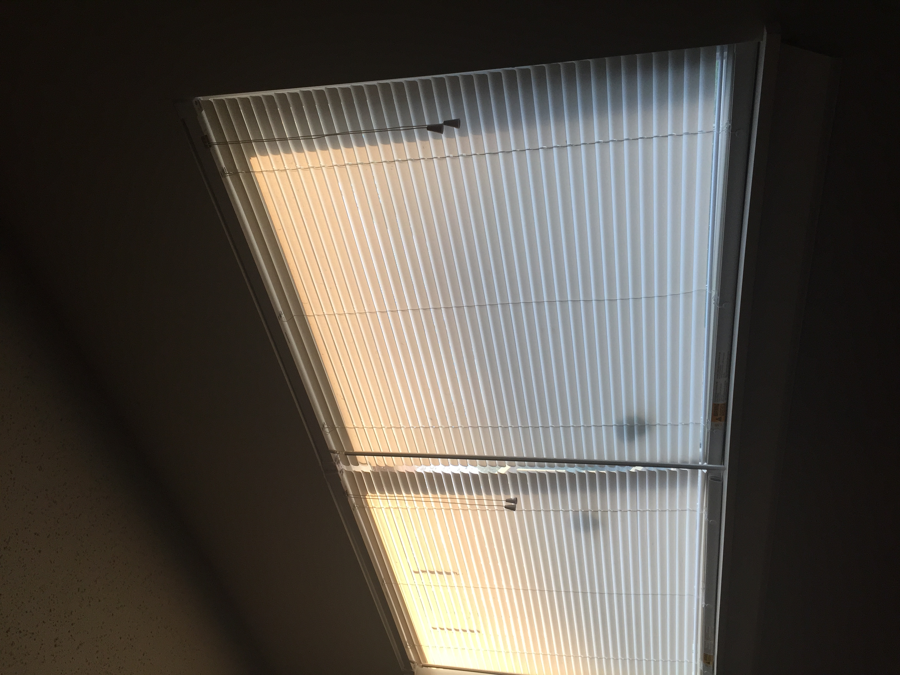

About Velvet Rot
Velvet Rot is a fictional queer grungegaze band known for their hazy and distorted sound. Formed in 20XX, the band has captivated audiences with their introspective lyrics and restless emo energy.
Drawing inspiration from Forest Green, Microwave, Mom Jeans, PALESKIN, and Ethel Cain, the band makes music for those who feel like outsiders, embracing the beauty in melancholy and the power of self-expression.
Rowan Vale
(they/them)
Vocals and guitar
Rowan is pansexual and non-binary. Their washed-out guitar textures and intimate lyrics give Velvet Rot its signature sound. Rowan's songwriting often explores themes of identity, love, and the struggles of navigating a world that doesn't always understand them.
Ellis Wren
(he/they)
Bass and backing vocals
Ellis is an asexual and genderqueer musician. Their deep, resonant bass lines provide the foundation for Velvet Rot's music, while their backing vocals add depth and harmony to the band's sound.
Jude Mercer
(he/him)
Drums
Jude is a bisexual cis man with a grungy style and a love for raw, energetic performances. His drumming drives the band's rhythm and adds a dynamic edge to their music.
Music
Three fictional albums have been released by Velvet Rot, each exploring different themes and sonic landscapes. The band's music is available on all major streaming platforms, and they continue to create new material that resonates with their growing fanbase.

Sunset Window
Velvet Rot's debut album, showcasing their signature sound and introspective lyrics.